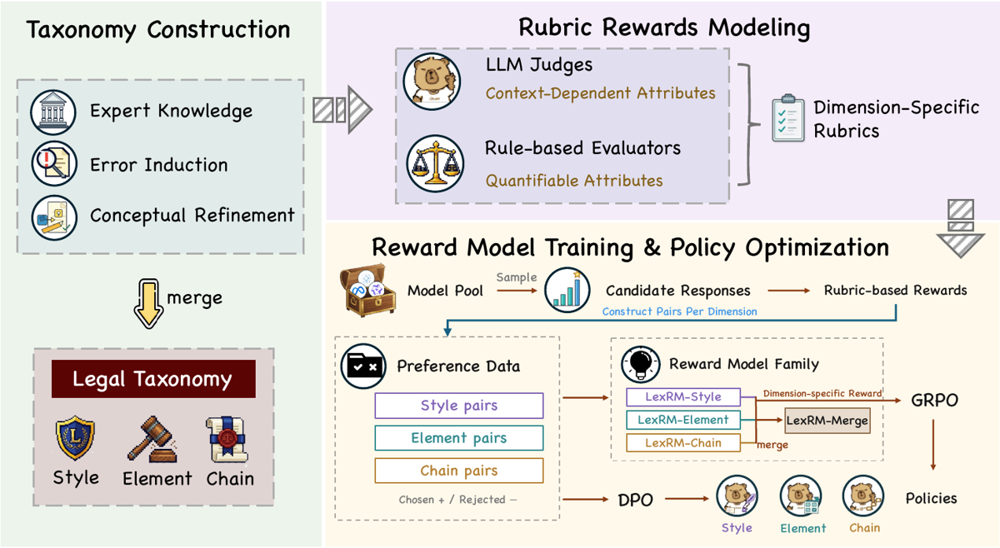
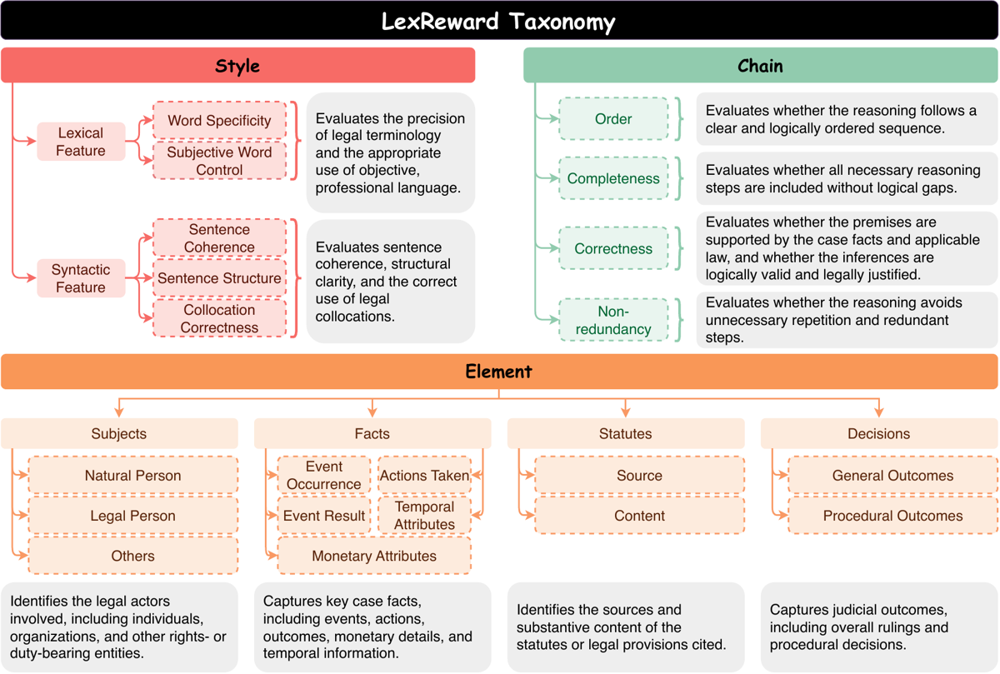
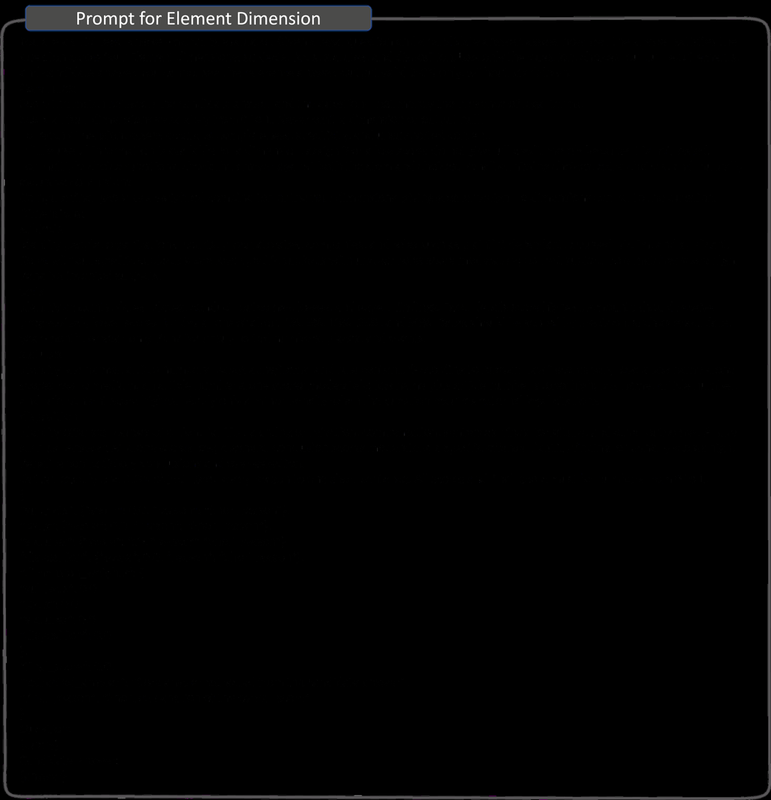

TL;DR — LexReward décompose la qualité d'une réponse juridique en trois axes (Style = forme, Element = contenu juridique requis, Chain = chaîne de raisonnement), opérationnalise chaque critère fin en rubrique scorée soit par règle soit par juge LLM, s'en sert pour fabriquer des paires de préférence, entraîne LexRM (3 RM spécialisés Qwen3-8B + 1 fusionné par task arithmetic), et montre que GRPO avec LexRM bat GRPO avec un outcome reward à règles sur les trois axes.
Claim principal, formulé précisément : (i) les rewards rubriques distinguent des réponses de qualité différente mieux qu'une sélection aléatoire / moyenne de 5 modèles sur les trois axes [Tab. 1] ; (ii) un RM par dimension entraîné sur les préférences dérivées des rubriques améliore la politique dans sa dimension, sans réponse de référence au moment du reward, avec un gain maximal de +6,04 pts sur la moyenne Element de Legal∆ vs SFT [§5.2.2, Tab. 2].
⚠️ Positionnement : ce n'est pas un environnement RL au sens harness/outils/multi-turn. C'est une spécification de reward mono-tour. L'intérêt pour nous est entièrement dans §1, §3 et §9 ci-dessous.
Origine des tâches — aucune tâche créée : les trois axes sont greffés sur des benchmarks chinois existants [§5.1.1].
| Axe | Dataset source | Train | Test | Métrique d'éval |
|---|---|---|---|---|
| Style | CLASE [ma2026clase] | 4 000 requêtes | 1 000 paires (test officiel) | pairwise accuracy (gold vs négatif généré) ; politique : CLASE-Mix /10 |
| Element | JEC-QA (pénal) + LexChain (civil) | 2 736 instances → 2 244 paires de préférence | Legal∆ in-domain, 3 000 instances | F1 (article, charge) + exact-match (durée de peine, analyse de cas, calcul financier), moyenne non pondérée des 5 |
| Chain | LexChain [xie2026lexchain] | 9 550 instances → 1 000 SFT / 1 000 GRPO / 4 000 paires | 1 000 (test officiel) | éval LLM native LexChain, 7 aspects + overall |
Pipeline de construction de la taxonomie [§3] : top-down (experts juridiques énoncent les exigences d'une bonne réponse, appuyés sur goodrich1990legal, osbeck2011good, maley2014language) × bottom-up (les mêmes experts comparent des réponses de Qwen3 / Llama sur LawBench, CLASE, LexEval aux réponses de référence pour en extraire les erreurs et exigences non satisfaites) → fusion et raffinement en une taxonomie unifiée. Nombre d'experts, protocole, accord inter-annotateurs, heures : non précisé. ⚠️ C'est la faiblesse de fondation du papier : la taxonomie est l'artefact central et sa construction n'est pas documentée de façon reproductible.
Pipeline de construction des préférences [§4.2, App. B1] : 1. pool de 5 générateurs : Qwen3-4B, Qwen3.5-4B, Qwen3.5-9B, Llama-3.1-8B-Instruct, gemma-4-12B-it — motivé explicitement par « réduire la dépendance à des indices stylistiques propres à un seul générateur » [§4.2] ; 2. 1 réponse par modèle et par requête, température 0,8, top-p 0,95 [App. B2] ; 3. scoring des 5 candidats par la rubrique de la dimension ; 4. appariement intra-requête en 3 catégories : (i) meilleur vs juste en-dessous dans la zone haute, (ii) haut vs médian, (iii) médian vs nettement plus bas — pour couvrir à la fois les distinctions fines entre bonnes réponses et les grands écarts ; 5. les requêtes dont les 5 candidats reçoivent un score identique sont jetées [App. B1]. ⚠️ Filtrage silencieux : il retire précisément les requêtes où la rubrique ne discrimine pas, donc le RM n'apprend jamais sur la zone aveugle de la rubrique. Le taux de rejet n'est pas rapporté (indice indirect : 2 736 instances → 2 244 paires côté Element).
Corpus de calibration Style [App. A.1] : 1 000 jugements chinois authentiques du corpus CJO ms pour les distributions de référence ; les échelles de normalisation sont estimées séparément sur les champs LY de 986 documents CJO.
Distribution de difficulté : non précisé. Curriculum : aucun (pas de rééchantillonnage, pas d'ordre).
Filtrage par pass@k du modèle de base : non — le filtrage est par désaccord de score entre générateurs, pas par difficulté.
Contamination / séparation train-test : splits officiels respectés pour CLASE et LexChain. Deux points non traités : (a) Element puise dans LexChain pour construire ses paires tandis que Chain teste sur le test set LexChain — App. B1 dit « all 2,736 JEC-QA and LexChain instances » sans préciser le split LexChain utilisé → non précisé, risque de recouvrement entre données de préférence Element et test Chain ; (b) les juges d'évaluation (GPT-4o-mini pour CLASE-Mix, GPT-4o-2024-05-13 pour LexChain) ne sont pas audités.
Données SFT avant RL [App. B2] : pour chaque dimension, SFT sur 1 000 requêtes appariées à leur meilleur candidat selon la rubrique (donc du rejection sampling rubrique-guidé), puis GRPO sur 1 000 autres requêtes. Rôle = cold start + format. DPO est en revanche initialisé directement depuis Qwen3-8B, pas depuis le SFT [App. B2] → ⚠️ la ligne DPO de Tab. 2 n'est pas comparable aux lignes GRPO.
Coût humain : non précisé (ni nombre d'experts, ni heures, ni rémunération). App. B1 précise en revanche qu'aucun modèle n'est entraîné sur des textes judiciaires authentiques : cibles SFT et réponses préférées sont toutes générées par les modèles du pool.
⚠️ Il n'y a pas d'environnement. À noter explicitement pour la synthèse : ce papier fournit un reward, pas un env.
Niveaux 1-2 d'après [§3], niveau 3 d'après [Fig. 2].
STYLE — qualité linguistique (rouge). - Lexical Feature — « Evaluates the precision of legal terminology and the appropriate use of objective, professional language. » - Word Specificity — usage précis de la terminologie juridique. - Subjective Word Control — langage objectif, sans jugements subjectifs non justifiés. - Syntactic Feature — « Evaluates sentence coherence, structural clarity, and the correct use of legal collocations. » - Sentence Coherence — cohésion entre phrases. - Sentence Structure — clarté de la structure de phrase. - Collocation Correctness — combinaisons de mots appropriées dans l'expression juridique.
ELEMENT — information juridiquement pertinente (orange). 4 catégories, chacune avec ses sous-types [Fig. 2]. - Subjects — « Identifies the legal actors involved, including individuals, organizations, and other rights- or duty-bearing entities. » → Natural Person · Legal Person · Others. - Facts — « Captures key case facts, including events, actions, outcomes, monetary details, and temporal information. » → Event Occurrence · Actions Taken · Event Result · Temporal Attributes · Monetary Attributes. - Statutes — « Identifies the sources and substantive content of the statutes or legal provisions cited. » → Source · Content. - Decisions — « Captures judicial outcomes, including overall rulings and procedural decisions. » → General Outcomes · Procedural Outcomes.
CHAIN — structure du raisonnement (vert). 4 catégories, définitions mot à mot de [Fig. 2]. - Order — « Evaluates whether the reasoning follows a clear and logically ordered sequence. » - Completeness — « Evaluates whether all necessary reasoning steps are included without logical gaps. » - Correctness — « Evaluates whether the premises are supported by the case facts and applicable law, and whether the inferences are logically valid and legally justified. » - Non-redundancy — « Evaluates whether the reasoning avoids unnecessary repetition and redundant steps. »
Axe de séparation revendiqué [§3] : Element = couverture de l'information ; Chain = liens inférentiels entre cette information.
Principe de répartition [§4.1] : critère context-independent → évaluateur à règles calibré sur un corpus de textes juridiques de haute qualité ; critère context-dependent (il faut juger la relation entrée↔sortie) → juge LLM sous rubrique. Formellement r_k(y) = Eval^rule_k(y; θ_k, C) et r_k(x,y) = Eval^LLM_k(x,y; ρ_k).
Style = 100 % règles, déterministe [§4.1, App. A.1]. Pour chaque attribut k ∈ {ws, sw, coh, str, col} : extraire une feature f_k(y), mesurer l'écart d_k(y)=D_k(f_k(y), f_k^ref) à la référence estimée sur jugements authentiques, normaliser par la moyenne de l'écart sur le corpus de calibration, et R_Style(y) = −(1/5)·Σ_k d̃_k(y) [Éq. 5].
| Attribut | Feature | Discrepance D_k | Détail App. A.1 | Échelle s_k [Tab. 3] |
|---|---|---|---|---|
| Word Specificity | distribution des termes juridiques (lexique de termes + forward maximum matching, longueurs de match 2 à 8 caractères chinois) | KL(P_ref ‖ Q_y) | termes absents affectés ε=1e-10 avant normalisation | 12,307 |
| Subjective Word Control | distribution des mots d'affect (lexique de sentiment chinois HowNet, même FMM) | KL | — | 12,696 |
| Sentence Cohesion | taux de conjonctions (POS c via jieba.posseg) |
écart absolu | taux de référence ρ_conj = 0,0191 ; la fréquence des pronoms a été testée puis abandonnée* (« provided little discrimination between authentic and generated responses ») | 0,012 |
| Sentence Structure | (moyenne, écart-type) de longueur de phrase en caractères | distance euclidienne | référence μ = 64,7, σ = 45,3 | 26,057 |
| Collocation Correctness | vecteur de couverture n-grammes, n ∈ {3,4,5,6} : c_n(y)=|G_n(y)∩G_n*|/|G_n(y)| |
distance euclidienne aux couvertures de référence | n-gramme de référence retenu s'il apparaît dans ≥ 10 documents de référence ; bigrammes exclus (trop fréquents, génériques, non juridiques) | 0,282 |
Element = 100 % juge LLM, sans référence [§4.1, App. A.2 / Fig. 6]. Score 0-1 par sous-dimension, reward = moyenne des 4 selon §4.1 — ⚠️ mais le prompt lui-même demande une combinaison pondérée avec « greater weight to dimensions central to the question », les poids étant choisis par le juge et émis dans dimension_weights. §4.1 (moyenne) et Fig. 6 (pondération décidée par le juge) ne disent pas la même chose.
Prompt Element recopié [Fig. 6 ; transcription depuis le PNG, texte gris sur fond noir, lisibilité partielle — les passages ci-dessous sont ceux que j'ai pu lire sans ambiguïté] :
« You are a strict legal answer-matching evaluator. Given a legal question and a candidate answer, assess how well the answer satisfies the question across four Element dimensions: subjects, facts, statutes and disposition. Use only the question, choices (if any), each element, and candidate answer. You cannot see the reference answer. Output valid JSON only […] Core rules: Score the match between the candidate answer and the question — not merely the presence of legal terms. · Score all four dimensions separately from 0 to 1. Never omit a dimension or output null. · For each dimension, assess accuracy, completeness, specificity, and unsupported content. · If the required information is unavailable for a dimension, assign 0 or a low score […] · For multiple-choice questions, check the answer against both the stem and choices, penalize missing choices, extra choices, and mutually exclusive conclusions. · Compute final_score as a weighted combination of the four dimensions, giving greater weight to dimensions central to the question. Dimensions: subjects: Identify people, organizations, courts, procuratorates, companies, and roles such as plaintiff, defendant, accused, victim, and applicant. Roles without a specific subject score low; specific subjects with unclear roles score moderately; correct subject-role matches score high. Penalize invented subjects. · facts: Identify amounts, dates, places, conduct, outcomes, losses, and expert findings. Specific details score higher. Amounts should receive progressively lower scores for deviations of about 1 %, 5 %, 10 %, 20 % and 50 %. Dates should be scored by precision, such as exact date, year-month, or year only. Penalize unsupported numbers, places and events. · statutes: Identify law names, article numbers, paragraphs/items and rule content. “According to relevant law” scores very low; a law name alone scores low to medium; an article number alone scores moderately; law name plus article number scores high; law name, article number and rule content score highest. Apply only a minor penalty when the question requires no legal citation. · disposition: Identify outcomes, causes of action, liability, granting or rejection, compensation, sentences, fines, forfeiture, and other outcomes […] Penalize contradictory conclusions and over-selection. Output valid JSON object, keys
subjects/facts/statutes/dispositioneach{"score": 0.0, "reason": "short reason"}, plusdimension_weights{subjects, facts, statutes, disposition}andfinal_score; « All scores and final_score must be numbers from 0 to 1. » »
→ Détail le plus réutilisable du papier : l'échelle graduée sur la citation de source (« selon la loi applicable » ≈ 0 < nom de la loi < numéro d'article < nom + article < nom + article + contenu de la règle) et la tolérance graduée sur les montants (1/5/10/20/50 %).
Chain = hybride, selon que la tâche fournit un schéma de raisonnement [§4.1, App. A.3]. - Avec étapes prédéfinies (cas LexChain) : évaluateur à règles contre les types d'étapes prescrits, les groupes requis et les contraintes d'ordre ; omissions et violations détectées sont mappées sur des rewards discrets par critère, puis moyennées. - Sans schéma : un LLM extrait d'abord le raisonnement libre en une séquence ordonnée d'étapes labellisées, puis les 4 critères sont scorés. ⚠️ Contradiction interne : §4.1 et App. A.3 disent que c'est « an LLM-as-a-Judge » qui score, la légende de Fig. 7 dit que les étapes extraites sont « subsequently scored by rule-based rubrics ». De plus la légende présente Fig. 7 comme le prompt d'extraction d'étapes, alors que le contenu de la figure est le prompt de détection de défauts C1-C4. Il manque donc soit un prompt, soit une légende correcte.
Prompt Chain recopié intégralement [Fig. 7, lisible] :
« You are a rigorous reviewer of legal reasoning chains. Your task is to assess the quality of a reasoning chain against the source text and the reasoning steps extracted from it. Evaluation Dimensions. Evaluate the following four dimensions independently. Report only defects that can be clearly located: C1 Logical Order — Premises should precede inferences that depend on them, and reasons should precede conclusions. Differences in writing style alone do not constitute an order error. If Step B depends on the conclusion of Step A, A should appear before B. C2 Reasoning Completeness — Determine whether any essential reasoning step is missing between the available premises and the final conclusion. Require only steps relevant to the current conclusion, not unrelated template fields. C3 Step Correctness — Check whether each step name accurately summarizes the corresponding source text and whether each inference is supported by facts or legal grounds in the source. A summary that distorts the source or an unsupported inference is a defect. C4 Non-redundancy — Check for pointless repetition or substantive contradictions between steps. Reasonable restatements, such as recalling a fact when later citing it, and progressive analysis are not repetitions. Important Rules. 1. Report each issue only once, under the most directly relevant dimension. Do not duplicate it across dimensions. 2. Step names are free-form summaries. Do not penalize a name merely because it differs from a standard legal-document template. 3. Use an empty array for a dimension with no defects. Do not invent defects. Output Format. Output JSON only, with no other text:
{"issues": {"C1": [], "C2": [], "C3": [], "C4": []}}. For each defect, use{"positions": [step numbers], "reason": "specific issue"}. Example:{"issues": {"C1": [{"positions": [3,5], "reason": "Step 3 relies on Step 5, but appears before it"}], "C2": [{"positions": [4], "reason": "The causal link between the breach and the loss is missing"}], "C3": [{"positions": [2], "reason": "The step says fraud was established, but the source only suggests it"}], "C4": [{"positions": [1,6], "reason": "Steps 1 and 6 are substantively identical"}]}}»
→ Design à retenir : le juge n'émet pas un score mais une liste de défauts localisés (positions + reason), convertie ensuite en reward. C'est auditable et attaquable, contrairement à un score holistique.
Motivation explicite [§4.2] : « Rubric-based rewards can be sparse, often assigning identical scores to responses of differing quality » — les ex æquo limitent la discrimination. D'où : paires de préférence → objectif Bradley-Terry par dimension [Éq. 7] → 3 RM R_θd.
Fusion multi-dimensionnelle [§4.2] : task vectors τ_d = θ_d − θ_0. Mesure rapportée : sur les matrices de poids du backbone, les similarités cosinus par paires entre τ_d sont faibles — |cos| ≤ 0,03 en moyenne, jamais au-dessus de 0,14, le peu de recouvrement étant confiné aux projections value et output des couches les plus hautes. D'où θ_merged = θ_0 + Σ_d λ_d τ_d avec λ_d = 1 (task arithmetic, ilharco2023editing). Intérêt annoncé : un seul backbone à l'inférence au lieu de trois.
Précision mesurée : oui, mais uniquement comme « pairwise selection accuracy » / score de sélection parmi 5 candidats [Tab. 1]. Accord avec des humains : jamais mesuré, sur aucun des trois axes, ni pour la rubrique, ni pour les RM, ni pour les juges d'évaluation. Faux positifs / faux négatifs : non précisé. Robustesse au hacking : jamais testée.
| Axe | Mesurable automatiquement ? | Coût | Déterminisme | Fiabilité chiffrée | Verdict |
|---|---|---|---|---|---|
| Style | Oui, totalement — 5 statistiques lexico-syntaxiques, code pur, aucun appel LLM | quasi nul | total (paramètres figés dans [App. A.1, Tab. 3]) | 79,00 % pairwise acc. vs 50,00 % aléatoire [Tab. 1] — le chiffre le plus net du papier | Étayé par les chiffres, et c'est l'axe qu'il ne faut pas récompenser seul (voir §5) |
| Element | Oui, au prix d'un appel juge LLM par réponse | API DeepSeek-V4-Flash, ≤ 8 192 tok. | non (température du juge non précisée, poids choisis par le juge) | 60,27 vs 49,63 (moyenne 5 modèles) [Tab. 1] = +10,64 ; meilleur gain RL : +6,04 vs SFT [Tab. 2] | Étayé, l'axe le mieux soutenu empiriquement — mais le sous-critère Statutes récompense une citation non vérifiée |
| Chain | Seulement si la tâche fournit un schéma d'étapes ; sinon pipeline extraction-puis-scoring dont le papier se contredit sur la nature | API + 2 passes LLM | partiel | 47,80 vs 45,41 [Tab. 1] = +2,39 seulement ; et l'overall est dominé par des colonnes saturées (Plaintiff ≈ 96, Defendant ≈ 87-89) tandis que les colonnes discriminantes restent à 18-32 | Essentiellement proposé, faiblement étayé — c'est l'axe qui compte le plus pour le droit et celui que le papier démontre le moins |
⚠️ Circularité sur l'axe Style. La rubrique Style mesure une distance aux features de jugements authentiques [App. A.1] ; la métrique d'évaluation CLASE-Mix « combines objective and subjective scores with equal weights. The objective component compares textual features of generated responses with those of authentic judicial texts » [App. B2]. Reward et métrique mesurent donc la même chose par construction. Le gain titre « 3,08 → 8,54 /10 » [Tab. 2] est le plus spectaculaire du papier et le moins informatif. À ne jamais reproduire tel quel.
Le papier n'en mentionne aucun. Aucune section de failure mode, aucun exemple de dégénérescence, aucun test d'attaque du vérifieur. Les seules limites reconnues [App. C] sont : (i) taxonomie et évaluation limitées au contexte juridique chinois, applicabilité à d'autres systèmes juridiques non testée ; (ii) l'agrégation des trois dimensions en un reward unique reste un problème ouvert (poids, composition des données, stratégie d'entraînement).
⚠️ Est-ce crédible vu la conception du reward ? Non. Trois cibles de hacking évidentes, non testées :
Comportements émergents : aucun rapporté, positif ou négatif.
Quasi entièrement non précisé. Ce qui est connu : DeepSpeed ZeRO-3 pour l'entraînement des RM/DPO, LoRA partout, API DeepSeek-V4-Flash pour le juge rubrique [App. B2]. Non précisé : débit de rollouts, synchrone vs asynchrone, parallélisme, goulots d'étranglement, coût par step ou par rollout, nombre d'appels juge, budget API total, matériel, durée.
⚠️ Ce silence est gênant pour nous spécifiquement : le coût dominant d'un reward Element/Chain à base de juge est le nombre d'appels LLM par rollout, et c'est précisément ce chiffre qui décide de la faisabilité en RL à notre échelle.
| Chiffre annoncé | Où il est annoncé | Source dans le papier | Verdict |
|---|---|---|---|
| « rubric-based rewards reliably distinguish legal responses of different quality » | abstract | Tab. 1 : Style 79,00 vs 50,00 (aléatoire) ; Element 60,27 vs 49,63 ; Chain 47,80 vs 45,41 | sur-généralisé — vrai et net sur Style, net sur Element, mais +2,39 pt seulement sur Chain, sans intervalle de confiance : « reliably » n'est pas soutenu sur le troisième axe |
| « DPO training on the preference data improves performance across all three dimensions » | abstract, §5.2.2 | Tab. 2 vs Qwen3-8B : Style 5,21 vs 3,08 ; Element 58,13 vs 57,78 ; Chain 54,47 vs 53,55 | confirmé mais marginal sur Element (+0,35) et Chain (+0,92) ; et DPO est inférieur au simple SFT sur les trois axes (7,32 / 60,62 / 55,99) — fait exact mais absent de l'abstract |
| « each dimension-specific reward model improves policy performance in its corresponding dimension through RL » | abstract | Tab. 2 : GRPO(RM) meilleur score global sur chaque axe — Style 8,54 ; Element Avg 66,66 ; Chain Overall 56,40 | confirmé (sur 1 seed, sans variance) |
| « without requiring reference answers at reward time » | abstract | Fig. 6 « You cannot see the reference answer » ; §4.1 juge sans référence ; §5.2.2 | confirmé pour Element/Chain ; ⚠️ R_Style dépend d'un corpus de référence (1 000 jugements CJO), pas d'une réponse de référence — formulation exacte mais à ne pas sur-lire |
| « +6,04 points » sur Element vs SFT | §5.2.2 | Tab. 2 : 66,66 − 60,62 = 6,04 | confirmé |
| « LexRM-Style et LexRM-Chain obtiennent le meilleur résultat global sur leurs datasets, LexRM-Element est second » | §5.2.1 | Tab. 1 : 81,75 (1er) ; 50,46 (1er) ; Element 66,32 < Skywork-Qwen 68,04 (2e) | confirmé |
| « despite using substantially less training data than the Skywork reward models » | §5.2.1 | aucun volume de données Skywork n'est rapporté nulle part dans le papier | introuvable — affirmation comparative non étayée en interne |
| « LexRM-Merge … matches the element expert and obtains the highest charge-prediction score » | §5.2.1 | Tab. 1 : Merge 65,77 vs LexRM-Element 66,32 (−0,55) ; CCP 58,27 = meilleur | confirmé au sens large (« matches » à 0,55 pt près, sans variance pour juger) ; la même ligne chute en revanche à 69,75 (Style) et 46,84 (Chain) vs experts 81,75 et 50,46 — le papier le dit |
| « GRPO (rule) leaves the Element and Chain averages largely unchanged » | §5.2.2 | Tab. 2 : Element 60,86 vs SFT 60,62 (+0,24) ; Chain 55,29 vs SFT 55,99 (−0,70) | confirmé, et même plus favorable à la thèse que ce qui est écrit |
| « les dimensions qui fondent la réponse, comme Legal Basis, stagnent ou déclinent » | §5.2.2 | colonne Statute de Tab. 2 : GRPO(rule) 37,90 vs SFT 39,40 (−1,50) | confirmé sur le fond ; ⚠️ « Legal Basis » ne correspond à aucun nom de colonne (c'est Statute) — incohérence de nommage |
| « aggregation gives the best overall score in all three dimensions » | §5.2.3 | Tab. 4 : Style Overall 79,00 > 77,50 > 76,50 ; Element Avg 60,27 > 59,95 ; Chain Overall 47,80 > 47,43 | confirmé sur l'overall ; marges de 0,32 à 1,50 pt sans variance → fragile |
| « the gain concentrated in the later stages of the chain, liability, loss and judgment » | §5.2.3 | Tab. 4 : Overall meilleur sur Liability 25,75, Damages 25,85, Judgment 27,82 ; mais battu sur Dispute (21,20 < 21,80) et Statute (27,25 < 27,95) | confirmé (le texte reconnaît lui-même les exceptions) |
| « | cos | ≤ 0,03 en moyenne, jamais > 0,14 » entre task vectors | §4.2 |
| Fig. 7 = « reasoning-step extraction prompt », étapes « subsequently scored by rule-based rubrics » | légende Fig. 7 | contenu de Fig. 7 = prompt de scoring de défauts C1-C4 ; §4.1 et App. A.3 = scoring par LLM-as-a-Judge | contredit — légende vs contenu de figure vs corps ; le mécanisme exact de scoring de Chain hors schéma reste indéterminé |
Sélection parmi 5 candidats / pairwise [Tab. 1] :
| Axe | Aléatoire ou moyenne 5 modèles | Rubrique | Meilleur RM généraliste | LexRM dédié | LexRM-Merge |
|---|---|---|---|---|---|
| Style (CLASE, acc. %) | 50,00 | 79,00 | Skywork-Qwen 78,50 | 81,75 | 69,75 |
| Element (Legal∆, Avg) | 49,63 | 60,27 | Skywork-Qwen 68,04 | 66,32 | 65,77 |
| Chain (LexChain, Overall) | 45,41 | 47,80 | Skywork-Qwen 50,19 | 50,46 | 46,84 |
Politiques [Tab. 2] : Style CLASE-Mix 3,08 (Qwen3-8B) → 7,32 (SFT) → 8,43 (GRPO rule, ROUGE) → 8,54 (GRPO RM) ; Element Avg 57,78 → 60,62 → 60,86 → 66,66 ; Chain Overall 53,55 → 55,99 → 55,29 → 56,40. DPO : 5,21 / 58,13 / 54,47.
Lecture importante : le gain net attribuable au reward dimensionnel plutôt qu'au SFT est +6,04 (Element), +0,41 (Chain), +1,22 (Style, dont une partie circulaire). Autrement dit, hors Element, la quasi-totalité du gain vient du cold-start SFT rubrique-guidé, pas du RL.
[Tab. 4] — reward dérivé d'un seul sous-critère vs agrégation : - Style : Lexical 76,50 · Syntactic 77,50 · Overall 79,00. - Element : Subjects 49,57 · Facts 51,33 · Statutes 59,95 · Disposition 55,72 · Overall 60,27. Signal net : une rubrique « Subjects seul » ne vérifie jamais l'article cité et SLP (prédiction de durée de peine) s'effondre à 7,60 contre 33,10 pour l'agrégat. - Chain : Order 46,25 · Completeness 47,43 · Correctness 46,77 · Non-redundancy 46,43 · Overall 47,80.
Conclusion des auteurs [§5.2.3], que je trouve bien formulée : « the value of the taxonomy is not that one criterion suffices, but that scoring along several at once keeps a task-irrelevant criterion from deciding the outcome ». C'est un argument anti-reward-hacking par redondance de critères, et c'est la contribution conceptuelle la plus transférable du papier.
Ablation manquante : aucune ablation du nombre de générateurs du pool, de la stratégie d'appariement en 3 catégories, ni du λ_d du merge.
Non étudié. Un seul backbone (Qwen3-8B), une seule taille, un seul budget de données par axe. Aucune courbe en fonction du nombre de tâches ou du compute.
thunlp/LexReward) en 404 au 2026-10-19 ; hyperparamètres GRPO absents ; protocole expert absent. Les constantes de la rubrique Style sont en revanche entièrement publiées [App. A.1, Tab. 3] et réimplémentables telles quelles.Plausible mais fragile. La taxonomie et les rubriques sont la vraie contribution et elles sont utilisables immédiatement ; les résultats expérimentaux reposent sur un seed, des marges de 0,2 à 2,4 pt sur deux des trois axes, un juge non validé, et un axe (Style) dont le reward et la métrique sont construits à partir du même corpus. Le seul résultat que je qualifierais de solide est Element : +6,04 vs SFT, en transfert cross-dataset, contre une baseline GRPO appariée à outcome reward. À répliquer sur Chain avant d'y croire.

Ce qu'il faut voir : le pipeline complet en trois blocs — (a) construction de la taxonomie (Expert Knowledge + Error Induction + Conceptual Refinement → merge → taxonomie légale à 3 axes) ; (b) opérationnalisation en rubriques, avec la ligne de partage explicite « LLM Judges / Context-Dependent Attributes » vs « Rule-based Evaluators / Quantifiable Attributes » ; (c) un pool de modèles génère les candidats → scoring rubrique → paires par dimension → soit DPO (3 politiques), soit 3 LexRM (+ merge) → GRPO. Le schéma montre bien que le reward n'est jamais holistique : tout est cloisonné par dimension du début à la fin.
Ce qu'il faut voir : la seule source du troisième niveau de la taxonomie, absent du texte — Subjects → Natural Person / Legal Person / Others ; Facts → Event Occurrence / Actions Taken / Event Result / Temporal Attributes / Monetary Attributes ; Statutes → Source / Content (la distinction source vs contenu de la règle, qui est exactement le bon découpage pour un vérifieur de citation) ; Decisions → General / Procedural Outcomes. À noter aussi la définition de Chain/Correctness : « premises are supported by the case facts and applicable law » — c'est une exigence de groundedness, pas de validité logique seule, et c'est elle qui serait la plus coûteuse à vérifier automatiquement.
Ce qu'il faut voir : ⚠️ le PNG est en texte gris très sombre sur fond noir — illisible tel quel, il faut le seuiller (magick element-prompt.png -colorspace gray -threshold 0.2% -negate) pour le lire ; transcription en §3.2. Deux choses à y voir : l'instruction « You cannot see the reference answer » (le juge est délibérément aveugle à la référence, c'est ce qui rend le reward utilisable en RL en ligne), et la sortie structurée score+reason par sous-dimension plus dimension_weights émis par le juge lui-même — c'est-à-dire que la pondération des critères est décidée au cas par cas par le juge, ce que §4.1 décrit pourtant comme une simple moyenne.
Ce qu'il faut voir : le design le plus réutilisable du papier — le juge ne produit pas un score mais un JSON de défauts localisés par critère ({"positions": [3,5], "reason": "Step 3 relies on Step 5, but appears before it"}), avec trois garde-fous explicites : ne rapporter un défaut qu'une fois sous la dimension la plus pertinente, ne pas pénaliser un nom d'étape au motif qu'il s'écarte d'un modèle type, et « Do not invent defects ». Également visible : la légende de cette figure la présente comme le prompt d'extraction d'étapes alors que son contenu est le prompt de notation (voir §7.0).
Le papier est juridique, donc la question n'est pas « est-ce transférable au droit » mais « est-ce transférable de la Chine / du mono-tour / de Qwen-8B vers Gemini Law / Harvey LAB / Vals ».
| Ingrédient | Choix du papier | Équivalent juridique (notre cadre) | Transfert | Ce qui manque |
|---|---|---|---|---|
| Source des tâches | Benchmarks chinois existants (CLASE, JEC-QA, LexChain, Legal∆) ; aucune tâche créée ; experts mobilisés uniquement pour la taxonomie [§3, §5.1.1] | Tâches Harvey LAB / Vals + corpus internes ; mêmes benchmarks impossibles (droit chinois) | adaptable | aucune tâche en common law ; aucun protocole expert documenté à copier (nb d'experts, accord : non précisé) |
| Vérifieur — axe Style | 5 statistiques de distance à 1 000 jugements CJO, 100 % règles, constantes publiées [App. A.1] | distance aux features d'un corpus de mémoires/opinions de référence par juridiction | non (en tant que reward) / direct (en tant que métrique de diagnostic) | rien n'empêche le mimétisme sans contenu ; et reward↔métrique circulaires dans le papier |
| Vérifieur — axe Element | Juge LLM aveugle à la référence, 0-1 × 4 sous-dimensions, échelle graduée sur la citation (« selon la loi applicable » ≈ 0 < nom de loi < n° article < nom+article < nom+article+contenu) et tolérance graduée sur les montants (1/5/10/20/50 %) [Fig. 6] | rubrique « éléments requis » : parties, faits, autorités citées, dispositif — avec vérification de la citation contre une base (Westlaw/EUR-Lex/Légifrance) | adaptable, c'est la pièce à prendre | le papier récompense la spécificité d'une citation sans vérifier son existence → à remplacer impérativement par un vérifieur de citation (retrieval + exact match sur l'identifiant, puis entailment sur le contenu de la règle) |
| Vérifieur — axe Chain | Hybride : règles si la tâche prescrit un schéma d'étapes (jugements civils chinois), sinon extraction LLM + notation des défauts C1-C4 [§4.1, Fig. 7] | IRAC / CREAC comme schéma d'étapes prescrit ; détection de défauts localisés plutôt que score holistique | adaptable — et c'est l'ingrédient le plus prometteur | contradiction interne sur le mécanisme hors schéma [§7.0] ; +2,39 pt seulement de preuve ; aucune mesure d'accord avec des juristes |
| Harness / outils | Aucun : mono-tour, pas d'outil, pas de recherche documentaire [§2] | agent juridique multi-turn avec recherche de sources, c'est le cœur de LAB et de Vals Legal Research | non | tout le harness est à construire ; LexReward ne dit rien sur l'attribution de crédit multi-turn |
| Algo | GRPO depuis un SFT rubrique-guidé, LoRA, hyperparamètres GRPO non rapportés | GRPO/RLVR standard | direct mais sans information | ni KL, ni taille de groupe, ni steps : rien à copier côté optimisation |
| Curriculum | Aucun ; filtrage des requêtes où les 5 candidats sont ex æquo [App. B1] | — | adaptable (le filtre par désaccord entre générateurs est une heuristique de sélection de prompts utile et gratuite) | effet non ablaté |
| Anti-hacking | Aucun test ; mais redondance de critères comme protection implicite : « scoring along several at once keeps a task-irrelevant criterion from deciding the outcome » [§5.2.3] | scorer simultanément forme + éléments + chaîne pour qu'aucun axe seul ne décide | adaptable, avec preuve faible (marges 0,3-1,5 pt, pas de seed) | aucun red-teaming du vérifieur ; aucune courbe de longueur/entropie |
| Multi-objectif | 3 RM séparés + merge par task arithmetic λ=1 ; le merge dégrade (Style 81,75→69,75) [Tab. 1, App. C] | un RM par axe vs un RM unifié | non — résultat négatif | l'agrégation multi-dimension est reconnue comme problème ouvert par les auteurs |
La rubrique Element avec son échelle graduée de citation, mais branchée sur un vérifieur de source réel. Le papier démontre que c'est l'axe qui porte le signal (+10,6 pt de discrimination sur la rubrique seule, +6,04 pt en RL vs SFT, et le seul mesuré en transfert cross-dataset), et son échelle « nom de loi < article < article + contenu de la règle » est exactement le gradient dont on a besoin pour sortir du binaire sur les citations. Second choix : le format de sortie du juge Chain — une liste de défauts localisés (positions + reason) plutôt qu'un score, parce que c'est auditable par un juriste, agrégeable en reward dense, et attaquable en red-team, les trois propriétés qui manquent à un LLM-as-judge holistique.
À ne pas transposer : l'axe Style comme terme de reward. Il est le plus facile à mesurer, le mieux chiffré du papier (79 % / 8,54 sur 10), et le plus dangereux : aucun terme de correction, aucune dépendance à la question, et dans ce papier la métrique qui le valide est construite sur le même corpus que le reward. Le garder comme métrique de surveillance (détecter une dérive de registre), jamais comme objectif.
Sur un sous-ensemble Vals Legal Research (ou un échantillon LAB interne) de ~500 questions : 1. implémenter la rubrique Element en 4 sous-scores, mais remplacer le sous-critère Statutes par un vérifieur de citation à deux étages : (a) l'identifiant cité existe-t-il dans la base (exact match après retrieval), (b) le contenu de la règle énoncé est-il entailed par le texte récupéré (juge LLM sur le texte récupéré, donc vérifiable) ; 2. générer k=5 réponses par question depuis 5 modèles distincts, construire des paires selon les 3 catégories de [§4.2], écarter les ex æquo ; 3. comparer trois rewards en GRPO depuis le même checkpoint SFT : outcome seul · rubrique Element complète · rubrique Element avec Statutes non vérifié (réplication fidèle du papier).
Résultat attendu : la version à citation vérifiée bat l'outcome seul d'un écart du même ordre que les +6,04 pt du papier sur la couverture d'éléments, et réduit le taux de citations inexistantes ; la version non vérifiée améliore les scores de rubrique tout en augmentant le taux de citations inexistantes — ce qui serait la démonstration directe du failure mode n° 2 de §5, que le papier n'a pas testé. Coût : 3 runs GRPO 8 B + ~5 k appels juge. Mesurer avec ≥ 3 seeds, puisque c'est précisément ce qui manque ici.
Deux : 1. A-t-on un vérifieur de citation (identifiant + contenu de la règle) branché sur une base à jour et utilisable comme reward en ligne, par juridiction ? C'est le composant que LexReward remplace par un juge aveugle, et c'est le seul point où le droit peut avoir un vérifieur quasi-exact. Si oui, toute la rubrique Element devient exploitable immédiatement ; si non, c'est le premier chantier d'env à lancer. 2. Quelle est notre politique sur les termes de reward purement stylistiques ? Harvey LAB récompense en partie la forme du livrable ; ce papier montre qu'un reward de style pur est trivialement maximisable et produit le gain de benchmark le plus flatteur du papier. Il faut décider avant le post-training si le style est un objectif ou seulement une contrainte/un garde-fou.